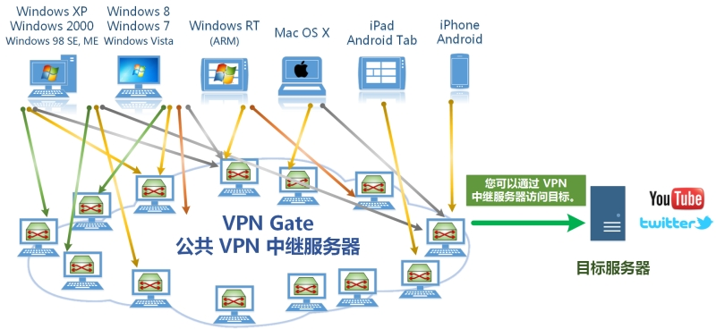
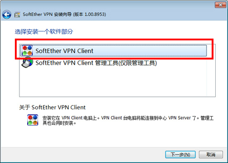
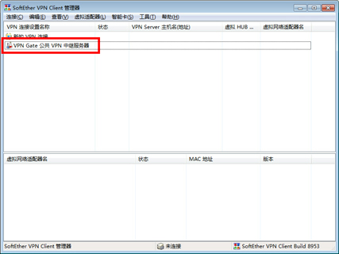
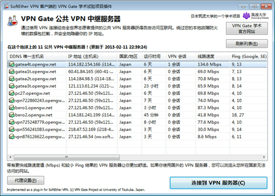

已经大半年没有推荐过新的翻墙工具了。今年2月份出现了一款新的翻墙工具 VPN Gate，俺尝试了一段时间，效果还不错。今天抽空跟大伙儿介绍一下。
VPN Gate 是日本筑波大学研究生院搞的一个学术研究项目。中文版的官网在 http://www.vpngate.net/cn/
从表面上看，VPN Gate 也属于 VPN 翻墙工具之一，也是基于加密的 VPN 协议来规避 GFW 的敏感词过滤。但是捏，既然俺专门写一篇博文来推荐，说明这玩意儿具有某些优势，是普通 VPN 所没有。
（如果尚不了解 VPN 翻墙的原理，可以先看俺之前的扫盲）
相比其它的 VPN 翻墙工具，VPN Gate 的主要特点是：
VPN Gate 提供的中继服务器，遍及全球，而且大都是由志愿者义务提供的。这些公共服务器的 IP 地址，每隔几分钟都会变化。示意图如下：
 因为这个特点，VPN Gate 就能在一定程度上规避 GFW 的 IP 黑名单。
使用 VPN Gate，完全免费。
VPN Gate 的服务器，不限制你使用的流量。
据俺最近一段时间的观察，VPN Gate 的速度比传统的几款翻墙工具（自由门、无界、世界通）更快。
在具体使用时，不同的 VPN Gate 服务器，速度是各不相同的。但基本上都能找到一个比较快的服务器（下面会具体介绍）。
很多 VPN 服务器需要注册用户才能使用，而 VPN Gate 支持匿名使用。省去了注册用户的麻烦。
正是因为上述优点，VPN Gate 受到翻墙网友的热捧。据 VPN Gate 官网的统计，目前的全球用户中，天朝的用户数和通讯量都遥遥领先。截至俺写本文的时候，天朝用户数 581635。看来天朝的翻墙运动，形势一片大好 :)
简单介绍一下如何使用。
直接到官网的这里进行下载。VPN Gate 的官网早就被 GFW 封了，所以你需要用其它翻墙工具访问 VPN Gate 的官网。
如果你手头没有可用的翻墙工具，请用 Google Reader 中打开俺博客的《2013年1月翻墙快报》。那篇博文中有“自由门、无界、世界通”的【墙内】下载链接哦。（趁着 Google Reader 还没关闭，再发挥一下它的余热）
提醒一下，VPN Gate 的安装包稍微有点大——30多兆。
VPN Gate 不是绿色软件，需要先进行安装，而且要以 Windows 的管理员身份哦（相比很多绿色的翻墙软件，这点不太爽）。虽然安装需要用 Windows 的管理员用户，但平常可以用 Windows 的普通用户进行操作。
安装开始时，有一步是“选择安装的软件”，会有两项。要选第一项，不要选第二项。如下图：
 其它的安装步骤都很简单，俺就不浪费口水了。
安装好之后，从开始菜单中点“SoftEther VPN 管理工具”，就会调出这款 VPN 的管理界面。主界面分上下两部分：上面是 "VPN 连接"的列表，下面是“虚拟网络适配器”的列表。
先到下半边的界面上点鼠标右键，在右键菜单中选“新建虚拟网络适配器”，会弹出一个对话框，让你输入一个适配器的名字。随便输入一个英文名即可（比如就输 vpn ）。
在上半边界面上，有一个“VPN Gate 公共 VPN 中继服务器”，如下图：

双击一下，会弹出如下界面：

你点一下右上方的“刷新列表”，然后稍等片刻。如果一切正常，大约十几秒或几十秒之后，这个服务器的列表就会刷新。而且服务器列表上方会显示“最后更新时间”，这个时间距离当前时间应该在20分钟之内。
这时候，你就可以进入下一步——“◇选择服务器的技巧”。
在前一个步骤，如果你等了超过10分钟，列表还是没刷新，那说明 VPN Gate 的客户端软件暂时无法更新服务器列表。
为啥会这样捏？俺猜测是：客户端软件本地的服务器列表中，每一个服务器都被 GFW 屏蔽了。那么客户端软件就无法通过已有的服务器去更新列表。
这种情况比较少见，俺只偶尔碰到。万一碰上，怎么解决捏？
你需要先临时运行另一个【可用的】翻墙工具（比如“自由门、无界、赛风”等）。运行好了之后，在 VPN Gate 界面的服务器列表左下方有一个“代理设置”的按钮，点击之后会出现一个设置代理的界面。
然后你就填写另外一个翻墙工具的代理。（无界默认的 HTTP 代理端口是
这时候再点“刷新列表”按钮，服务器列表应该就会正常更新了。
更新完之后，要记得把刚才修改过的代理设置恢复原状。
在刚才提到的服务器列表中，通常会列出几十个服务器。这几十个服务器，并不是每个都可以用的。为啥捏？
据俺观察，GFW 已经开始封锁 VPN Gate 了。如果某个服务器连续运行的时间较长（比如超过2天），那么这个服务器很可能已经上了 IP 黑名单了。这时候你就无法连上这个服务器了。
所以俺建议，尽量选择上线时间较短的服务器（看“运行时间”那一列）。另外为了保证速度快，还得看“线路速度”那一列，选大的。
选好服务器之后，双击建立连接。如果一些正常，会出现如下对话框，表示你已经接入该服务器了。接入之后，VPN Gate 所在的 Windows 系统中，每个网络软件都自动走 VPN 翻墙通道。

补充说明：
在《2013年7月翻墙快报》中，俺又补充了一些“连接 VPN 服务器”的技巧。如果你总是连不上 VPNGate 的服务器，可以参考那篇博文。
很多读者抱怨 VPN Gate 的安装包太大，通过翻墙方式下载，容易中途断线。俺的建议是，通过 VPN Gate 官方的镜像网站下载，【无需翻墙】，直接下载。
为了获得镜像网站列表，你可以先翻墙看一下 VPN Gate 官网的“这里”。
由于镜像网站经常更新，还可以通过电子邮箱订阅“镜像网站列表的每日更新”。先请翻墙访问“这里”。订阅之后，每隔8小时会发送一封邮件，告知你最新的镜像网站列表。
如今移动设备日益流行。很多同学希望在移动设备上翻墙。
据 VPN Gate 官网的介绍，目前支持 Android 设备（翻墙看“这里”）和 iOS 设备（翻墙看“这里”）。
关于跨电脑共享翻墙通道，俺之前写过一篇扫盲教程，在“这里”。
在《如何翻墙》和《扫盲 VPN 翻墙——以 Hotspot Shield 为例》这2篇教程中，俺都提及了“DNS 劫持”的问题。
如果你的操作系统中使用的是国内的 DNS 服务器，那么就存在“DNS 劫持”的风险。因为某些国内的 DNS 服务器，当你向该服务器查询某个墙外的【敏感】网站，它会【故意】给出错误的 DNS 查询结果。要避免这种很流氓的“DNS 劫持”，方法很简单——改用国外的 DNS 服务器（比如 Google 提供的
关于 DNS 方面的更多扫盲介绍，请看俺后来写的《扫盲 DNS 原理，兼谈“域名劫持”和“域名欺骗/域名污染”》。
从原理上看，VPN Gate 至少要比国内的 VPN 提供商更具备隐匿性。因为国内的 VPN 提供商通常会屈服于朝廷的压力，配合朝廷对用户的行为进行逆向追溯。
和国外的 VPN 提供商相比，VPN Gate 的安全性和隐匿性应该差不多。
有一个地方需要提醒一下：VPN Gate 有“反滥用政策”，官网介绍在“这里”。根据这个政策，为了防止某些人滥用 VPN Gate（比如用来发送垃圾邮件），VPN Gate 服务器会记录匿名用户的连接信息，包括如下：
如果你对隐匿性的要求很高，但是又希望使用 VPN Gate 翻墙，俺强烈建议使用 VPN + TOR，构造双重代理。具体的教程请看《如何隐藏你的踪迹，避免跨省追捕》系列博文的第5篇《用多重代理隐匿公网IP》。
对于双重代理，VPN Gate 服务器记录的连接信息是你对 TOR 节点的连接信息，而不是你对目标网站的连接信息。如此一来，通过你访问的目标网站进行逆向追踪，很难找到你的真实公网IP。
某些仔细的同学应该会发现，VPN Gate 官网提供的下载包，变化很频繁。大概几十分钟就出一个新的。
主要是因为 VPN Gate 的安装包里面，包含了当前最新的服务器列表。前面说了，VPN Gate 在全球的服务器，每分钟都有变化。这就导致安装包频繁更新。
顺便解释一下安装包的文件名：
以俺写本文时，官网的下载链接为例。文件名是
2013.04.19 表示生成该安装包的日期
build-9070 表示软件版本的 Build 号（这个号在软件的“关于对话框”也能看到）
126514 这是一个递增的序列号，每制作一个新的安装包，就加一
上述这几个部分，通常只需要关心 build 号。
出现这种情况，很可能是装错软件了。
有些同学装的是 SoftEther VPN，而不是 VPN Gate
VPN Gate 的底层是基于 SoftEther VPN 的。SoftEther VPN 本身【不】提供中继服务器列表。
俺博客上，和本文相关的帖子（需翻墙）：
2013年7月翻墙快报（补充介绍 VPN Gate 经验）
如何翻墙（传说中的扫盲教程，定期更新）
常见翻墙问题答疑（传说中的 FAQ，定期更新）
获取翻墙软件方法大全（教你在无法翻墙的情况下拿到翻墙软件）
多台电脑如何共享翻墙通道
扫盲 DNS 原理，兼谈“域名劫持”和“域名欺骗/域名污染”
关于 TOR 的常见问题解答
新版本无界——赛风3失效后的另一个选择
双管齐下的赛风3
自由門——TOR 被封之后的另一个选择
扫盲 VPN 翻墙——以 Hotspot Shield 为例
戴“套”翻墻的方法
简单扫盲 I2P 的使用
★VPN Gate 是啥玩意儿？
VPN Gate 是日本筑波大学研究生院搞的一个学术研究项目。中文版的官网在 http://www.vpngate.net/cn/
从表面上看，VPN Gate 也属于 VPN 翻墙工具之一，也是基于加密的 VPN 协议来规避 GFW 的敏感词过滤。但是捏，既然俺专门写一篇博文来推荐，说明这玩意儿具有某些优势，是普通 VPN 所没有。
（如果尚不了解 VPN 翻墙的原理，可以先看俺之前的扫盲）
★VPN Gate 有啥特点？
相比其它的 VPN 翻墙工具，VPN Gate 的主要特点是：
◇分布式的、动态的服务器
VPN Gate 提供的中继服务器，遍及全球，而且大都是由志愿者义务提供的。这些公共服务器的 IP 地址，每隔几分钟都会变化。示意图如下：
◇免费
使用 VPN Gate，完全免费。
◇不限流量
VPN Gate 的服务器，不限制你使用的流量。
◇速度快
据俺最近一段时间的观察，VPN Gate 的速度比传统的几款翻墙工具（自由门、无界、世界通）更快。
在具体使用时，不同的 VPN Gate 服务器，速度是各不相同的。但基本上都能找到一个比较快的服务器（下面会具体介绍）。
◇无需注册
很多 VPN 服务器需要注册用户才能使用，而 VPN Gate 支持匿名使用。省去了注册用户的麻烦。
正是因为上述优点，VPN Gate 受到翻墙网友的热捧。据 VPN Gate 官网的统计，目前的全球用户中，天朝的用户数和通讯量都遥遥领先。截至俺写本文的时候，天朝用户数 581635。看来天朝的翻墙运动，形势一片大好 :)
★如何使用？
简单介绍一下如何使用。
◇下载
直接到官网的这里进行下载。VPN Gate 的官网早就被 GFW 封了，所以你需要用其它翻墙工具访问 VPN Gate 的官网。
如果你手头没有可用的翻墙工具，请用 Google Reader 中打开俺博客的《2013年1月翻墙快报》。那篇博文中有“自由门、无界、世界通”的【墙内】下载链接哦。（趁着 Google Reader 还没关闭，再发挥一下它的余热）
提醒一下，VPN Gate 的安装包稍微有点大——30多兆。
◇安装
VPN Gate 不是绿色软件，需要先进行安装，而且要以 Windows 的管理员身份哦（相比很多绿色的翻墙软件，这点不太爽）。虽然安装需要用 Windows 的管理员用户，但平常可以用 Windows 的普通用户进行操作。
安装开始时，有一步是“选择安装的软件”，会有两项。要选第一项，不要选第二项。如下图：
◇添加“网络适配器”
安装好之后，从开始菜单中点“SoftEther VPN 管理工具”，就会调出这款 VPN 的管理界面。主界面分上下两部分：上面是 "VPN 连接"的列表，下面是“虚拟网络适配器”的列表。
先到下半边的界面上点鼠标右键，在右键菜单中选“新建虚拟网络适配器”，会弹出一个对话框，让你输入一个适配器的名字。随便输入一个英文名即可（比如就输 vpn ）。
◇获取公共服务器列表（正常情况）
在上半边界面上，有一个“VPN Gate 公共 VPN 中继服务器”，如下图：
双击一下，会弹出如下界面：
你点一下右上方的“刷新列表”，然后稍等片刻。如果一切正常，大约十几秒或几十秒之后，这个服务器的列表就会刷新。而且服务器列表上方会显示“最后更新时间”，这个时间距离当前时间应该在20分钟之内。
这时候，你就可以进入下一步——“◇选择服务器的技巧”。
◇获取公共服务器列表（异常情况）
在前一个步骤，如果你等了超过10分钟，列表还是没刷新，那说明 VPN Gate 的客户端软件暂时无法更新服务器列表。
为啥会这样捏？俺猜测是：客户端软件本地的服务器列表中，每一个服务器都被 GFW 屏蔽了。那么客户端软件就无法通过已有的服务器去更新列表。
这种情况比较少见，俺只偶尔碰到。万一碰上，怎么解决捏？
你需要先临时运行另一个【可用的】翻墙工具（比如“自由门、无界、赛风”等）。运行好了之后，在 VPN Gate 界面的服务器列表左下方有一个“代理设置”的按钮，点击之后会出现一个设置代理的界面。
然后你就填写另外一个翻墙工具的代理。（无界默认的 HTTP 代理端口是
9666、自由门默认的 HTTP 代理端口是8580、赛风默认的 HTTP 代理端口是8080）填好之后，点确定。VPN Gate 就可以利用另一个翻墙工具联网。这时候再点“刷新列表”按钮，服务器列表应该就会正常更新了。
更新完之后，要记得把刚才修改过的代理设置恢复原状。
◇选择服务器的技巧
在刚才提到的服务器列表中，通常会列出几十个服务器。这几十个服务器，并不是每个都可以用的。为啥捏？
据俺观察，GFW 已经开始封锁 VPN Gate 了。如果某个服务器连续运行的时间较长（比如超过2天），那么这个服务器很可能已经上了 IP 黑名单了。这时候你就无法连上这个服务器了。
所以俺建议，尽量选择上线时间较短的服务器（看“运行时间”那一列）。另外为了保证速度快，还得看“线路速度”那一列，选大的。
选好服务器之后，双击建立连接。如果一些正常，会出现如下对话框，表示你已经接入该服务器了。接入之后，VPN Gate 所在的 Windows 系统中，每个网络软件都自动走 VPN 翻墙通道。
补充说明：
在《2013年7月翻墙快报》中，俺又补充了一些“连接 VPN 服务器”的技巧。如果你总是连不上 VPNGate 的服务器，可以参考那篇博文。
★常见问题解答
◇如何免翻墙下载？
很多读者抱怨 VPN Gate 的安装包太大，通过翻墙方式下载，容易中途断线。俺的建议是，通过 VPN Gate 官方的镜像网站下载，【无需翻墙】，直接下载。
为了获得镜像网站列表，你可以先翻墙看一下 VPN Gate 官网的“这里”。
由于镜像网站经常更新，还可以通过电子邮箱订阅“镜像网站列表的每日更新”。先请翻墙访问“这里”。订阅之后，每隔8小时会发送一封邮件，告知你最新的镜像网站列表。
◇手机/平板上如何使用？
如今移动设备日益流行。很多同学希望在移动设备上翻墙。
据 VPN Gate 官网的介绍，目前支持 Android 设备（翻墙看“这里”）和 iOS 设备（翻墙看“这里”）。
◇如何让其它电脑也通过 VPN Gate 翻墙？
关于跨电脑共享翻墙通道，俺之前写过一篇扫盲教程，在“这里”。
在 VPN Gate 联通之后，为啥有些墙外网站能访问，有些却不行？
在《如何翻墙》和《扫盲 VPN 翻墙——以 Hotspot Shield 为例》这2篇教程中，俺都提及了“DNS 劫持”的问题。
如果你的操作系统中使用的是国内的 DNS 服务器，那么就存在“DNS 劫持”的风险。因为某些国内的 DNS 服务器，当你向该服务器查询某个墙外的【敏感】网站，它会【故意】给出错误的 DNS 查询结果。要避免这种很流氓的“DNS 劫持”，方法很简单——改用国外的 DNS 服务器（比如 Google 提供的
8.8.8.8 和 8.8.4.4）。关于 DNS 方面的更多扫盲介绍，请看俺后来写的《扫盲 DNS 原理，兼谈“域名劫持”和“域名欺骗/域名污染”》。
◇VPN Gate 的安全性/隐匿性如何？
从原理上看，VPN Gate 至少要比国内的 VPN 提供商更具备隐匿性。因为国内的 VPN 提供商通常会屈服于朝廷的压力，配合朝廷对用户的行为进行逆向追溯。
和国外的 VPN 提供商相比，VPN Gate 的安全性和隐匿性应该差不多。
有一个地方需要提醒一下：VPN Gate 有“反滥用政策”，官网介绍在“这里”。根据这个政策，为了防止某些人滥用 VPN Gate（比如用来发送垃圾邮件），VPN Gate 服务器会记录匿名用户的连接信息，包括如下：
日期和时间
目标 VPN 服务器的 ID、IP 地址和主机名称
活动的类型 (连接或断开)
源 VPN 客户端计算机的原始 IP 地址和主机名称
VPN 协议的类型 (SSL-VPN、L2TP、OpenVPN 或 SSTP)
VPN 客户端软件的名称和版本 (如果可用)
一个 VPN 连接的数据包数和字节数
如果你对隐匿性的要求很高，但是又希望使用 VPN Gate 翻墙，俺强烈建议使用 VPN + TOR，构造双重代理。具体的教程请看《如何隐藏你的踪迹，避免跨省追捕》系列博文的第5篇《用多重代理隐匿公网IP》。
对于双重代理，VPN Gate 服务器记录的连接信息是你对 TOR 节点的连接信息，而不是你对目标网站的连接信息。如此一来，通过你访问的目标网站进行逆向追踪，很难找到你的真实公网IP。
◇为啥 VPN Gate 的安装包频繁更新？
某些仔细的同学应该会发现，VPN Gate 官网提供的下载包，变化很频繁。大概几十分钟就出一个新的。
主要是因为 VPN Gate 的安装包里面，包含了当前最新的服务器列表。前面说了，VPN Gate 在全球的服务器，每分钟都有变化。这就导致安装包频繁更新。
顺便解释一下安装包的文件名：
以俺写本文时，官网的下载链接为例。文件名是
vpngate-client-2013.04.19-build-9070.126514.zip2013.04.19 表示生成该安装包的日期
build-9070 表示软件版本的 Build 号（这个号在软件的“关于对话框”也能看到）
126514 这是一个递增的序列号，每制作一个新的安装包，就加一
上述这几个部分，通常只需要关心 build 号。
◇为啥安装之后，没有出现“中继服务器列表”？
出现这种情况，很可能是装错软件了。
有些同学装的是 SoftEther VPN，而不是 VPN Gate
VPN Gate 的底层是基于 SoftEther VPN 的。SoftEther VPN 本身【不】提供中继服务器列表。
俺博客上，和本文相关的帖子（需翻墙）：
2013年7月翻墙快报（补充介绍 VPN Gate 经验）
如何翻墙（传说中的扫盲教程，定期更新）
常见翻墙问题答疑（传说中的 FAQ，定期更新）
获取翻墙软件方法大全（教你在无法翻墙的情况下拿到翻墙软件）
多台电脑如何共享翻墙通道
扫盲 DNS 原理，兼谈“域名劫持”和“域名欺骗/域名污染”
关于 TOR 的常见问题解答
新版本无界——赛风3失效后的另一个选择
双管齐下的赛风3
自由門——TOR 被封之后的另一个选择
扫盲 VPN 翻墙——以 Hotspot Shield 为例
戴“套”翻墻的方法
简单扫盲 I2P 的使用
版权声明
本博客所有的原创文章，作者皆保留版权。转载必须包含本声明，保持本文完整，并以超链接形式注明作者编程随想和本文原始地址：
https://program-think.blogspot.com/2013/04/gfw-vpngate.html
本博客所有的原创文章，作者皆保留版权。转载必须包含本声明，保持本文完整，并以超链接形式注明作者编程随想和本文原始地址：
https://program-think.blogspot.com/2013/04/gfw-vpngate.html